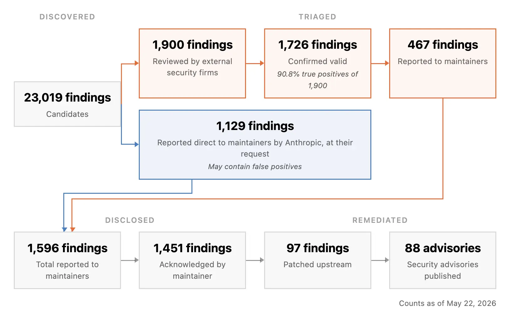

Anthropic's Project Glasswing, using the Claude Mythos Preview model, has discovered over 10,000 high/critical vulnerabilities in critical software within a month, shifting the bottleneck from vulnerability discovery to verification and patching.
Anthropic 的 Project Glasswing 利用 Claude Mythos Preview 模型，在一个月内发现了超过 10,000 个高危/严重漏洞，将瓶颈从漏洞发现转移到了验证和修补。
Key Points
- Scale of Discovery: Project Glasswing partners found >10,000 high/critical vulnerabilities in one month using Claude Mythos Preview.
- Performance Metrics: Cloudflare found 2,000 bugs (400 high/critical) with a false positive rate better than human testers. Mozilla found 271 vulnerabilities in Firefox 150, a 10x increase over previous models.
- Benchmark Results: UK AISI reports Mythos Preview is the first model to solve both of their cyber ranges end-to-end. XBOW reports "unprecedented precision" on web exploit benchmarks.
- Open-Source Impact: Scanning 1,000+ open-source projects yielded an estimated 6,202 high/critical vulnerabilities. Of 1,752 assessed, 90.6% were true positives, and 62.4% were confirmed high/critical.
- Bottleneck Shift: The primary constraint has moved from finding vulnerabilities to verifying, disclosing, and patching them. The dashboard shows a steep drop-off at each phase due to human effort required.
- Real-World Defense: At a partner bank, Mythos Preview helped detect and prevent a fraudulent $1.5 million wire transfer.
- Industry Response: Palo Alto Networks released 5x more patches than usual; Microsoft and Oracle report significantly increased patching rates.
Context & Contrast
This represents a step-change from prior AI-for-security work. Previous models (e.g., GPT-4, Claude Opus) could find vulnerabilities but at rates comparable to or slightly better than humans. This report claims a 10x+ improvement in bug-finding rates, moving AI from a co-pilot to a primary driver of vulnerability discovery. The shift in bottleneck from discovery to patching is a novel development, previously a theoretical concern. The 90.6% true positive rate on triaged findings is significantly higher than typical automated vulnerability scanners, which often suffer from high false positive rates.
Why It Matters
This fundamentally changes the cybersecurity risk calculus. The ability to find vulnerabilities at this scale and speed means that previously 'secure' software may be harboring thousands of unknown flaws. It accelerates the timeline for both attackers and defenders, but the report suggests defenders (via Project Glasswing) are currently leveraging it more effectively. It validates the concept of AI-first vulnerability discovery and will likely force a global re-evaluation of software supply chain security, patch management SLAs, and the economics of bug bounty programs. For AI Safety researchers, it provides a concrete, large-scale case study of a powerful AI capability with dual-use implications.
Critical Take
The report is a self-published announcement from Anthropic, lacking independent peer review of the aggregate claims. The 90.6% true positive rate is based on a subset of findings (1,752 out of 23,019) that were triaged, potentially introducing selection bias. The severity of many vulnerabilities (e.g., in obscure open-source libraries) may be low in practice. The claim that the bottleneck has shifted is based on current human triage capacity, which could be scaled with more resources or automation. The long-term impact on the attacker-defender balance is unclear; adversaries may soon have access to similar capabilities. The report does not detail the cost or computational resources required to run Mythos Preview at this scale.
What to Watch
- Patch Velocity: Track the patch release rates from major vendors (Microsoft, Oracle, Palo Alto) to see if the trend of 5x+ patches continues.
- Disclosure Policy Changes: Watch for industry-wide shifts away from the 90-day disclosure norm, possibly towards faster, more automated disclosure pipelines.
- Adversarial Use: Monitor for evidence of threat actors using similar AI models for vulnerability discovery and exploit development.
- Open-Source Maintainer Burnout: The report mentions maintainers asking to slow down disclosures; this could lead to a crisis in open-source maintenance.
- Model Access: How Anthropic controls access to Mythos-class models will be critical. Any leak or broader commercial release could dramatically shift the threat landscape.
- False Positive Management: The dashboard shows a steep drop-off; watch for innovations in automated triage and patching to address the new bottleneck.
要点
- 发现规模：Project Glasswing 合作伙伴使用 Claude Mythos Preview 在一个月内发现了超过 10,000 个高危/严重漏洞。
- 性能指标：Cloudflare 发现了 2,000 个漏洞（400 个高危/严重），误报率优于人类测试员。Mozilla 在 Firefox 150 中发现了 271 个漏洞，比之前的模型提升了 10 倍。
- 基准测试结果：英国 AISI 报告称 Mythos Preview 是首个端到端解决其两个网络靶场的模型。XBOW 报告称其在 Web 漏洞利用基准测试中具有“前所未有的精确度”。
- 开源影响：扫描 1,000 多个开源项目，估计发现了 6,202 个高危/严重漏洞。在已评估的 1,752 个漏洞中，90.6% 为真实阳性，62.4% 被确认为高危/严重。
- 瓶颈转移：主要约束已从发现漏洞转移到验证、披露和修补漏洞。仪表板显示，由于所需的人力，每个阶段都有急剧下降。
- 现实世界防御：在一家合作银行，Mythos Preview 帮助检测并阻止了一笔 150 万美元的欺诈性电汇。
- 行业响应：Palo Alto Networks 发布的补丁数量是平时的 5 倍；Microsoft 和 Oracle 报告补丁率显著提高。
背景与对比
这代表了与以往 AI 安全工作的一个阶跃变化。之前的模型（如 GPT-4、Claude Opus）可以发现漏洞，但速度与人类相当或略好。本报告声称漏洞发现率提升了 10 倍以上，将 AI 从副驾驶转变为漏洞发现的主要驱动力。瓶颈从发现转移到修补是一个新颖的发展，此前只是一个理论上的担忧。在已分类的发现中，90.6% 的真实阳性率显著高于典型的自动化漏洞扫描器，后者通常受困于高误报率。
重要性
这从根本上改变了网络安全的风险计算。以这种规模和速度发现漏洞的能力意味着，以前被认为是“安全”的软件可能隐藏着数千个未知缺陷。它加速了攻击者和防御者的时间线，但报告表明防御者（通过 Project Glasswing）目前正在更有效地利用它。它验证了 AI 优先的漏洞发现概念，并可能迫使全球重新评估软件供应链安全、补丁管理 SLA 以及漏洞赏金计划的经济性。对于 AI 安全研究员来说，它提供了一个具体的大规模案例研究，展示了一种具有双重用途影响的强大 AI 能力。
批判性视角
该报告是 Anthropic 自行发布的公告，缺乏对总体声明的独立同行评审。90.6% 的真实阳性率是基于已分类的发现子集（23,019 个中的 1,752 个），可能存在选择偏差。许多漏洞的严重性（例如，在晦涩的开源库中）在实践中可能较低。关于瓶颈已转移的说法是基于当前的人力分类能力，这可以通过更多资源或自动化来扩展。对攻防平衡的长期影响尚不清楚；对手可能很快就能获得类似的能力。该报告未详细说明以这种规模运行 Mythos Preview 所需的成本或计算资源。
后续关注
- 补丁速度：追踪主要供应商（Microsoft、Oracle、Palo Alto）的补丁发布率，观察 5 倍以上补丁的趋势是否持续。
- 披露政策变化：关注行业范围内是否偏离 90 天披露规范，可能转向更快、更自动化的披露流程。
- 对抗性使用：监控威胁行为者使用类似 AI 模型进行漏洞发现和漏洞利用开发的证据。
- 开源维护者倦怠：报告提到维护者要求放慢披露速度；这可能导致开源维护危机。
- 模型访问控制：Anthropic 如何控制对 Mythos 级模型的访问将至关重要。任何泄露或更广泛的商业发布都可能极大地改变威胁格局。
- 误报管理：仪表板显示急剧下降；关注自动化分类和修补方面的创新，以解决新的瓶颈。
